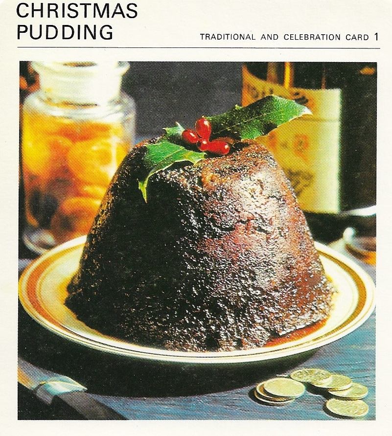

Christmas Pudding

Ingredients
- 1 cup all-purpose flour
- 1 cup fresh soft bread crumbs
- 1 teaspoon each mixed spice, cinnamon, and nutmeg
- Scant cup shredded suet
- ½ cup brown sugar
- 1 dessert apple, grated
- 1 small carrot, grated
- ¾ cup chopped candied peel
- 2 eggs
- Scant cup currants
- 1⅓ cups raisins
- ¾ cup seedless white raisins
- Scant ½ cup chopped prunes or dried apricots
- 1 cup chopped, balanced almonds
- Grated ring of ½ lemon
- Juice of ½ lemon
- Grated ring of ½ orange
- 1 tablespoon corn syrup or molasses
- ⅔ cup ale, beer, or milk
Preparation
- Mix all ingredients together and leave overnight, then stir again wishing hard for good luck.
- Put into the greased bowl(s), cover with foil or wax paper.
Alternatively cover the top with a flour and water paste (mix 2 cups flour to a paste with water).
- Steam or boil for time given, allowing longer time for one pudding.
Remove wet covers as soon as pudding is cooked, then put on dry covered and re-steam for 2-3 hours on Christmas morning.